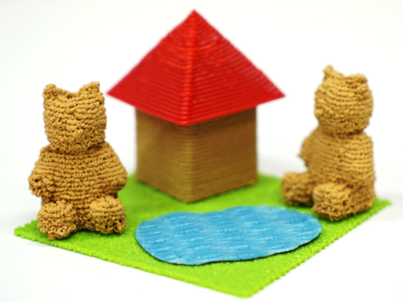

高橋 治輝 / Haruki TAKAHASHI
- 博士課程 3年 / 3rd-year Ph.D. Student
- 明治大学大学院 / Meiji University
- 宮下研究室 / Miyashita Lab.
- haruki(at)meiji.ac.jp
- Haruki Takahashi is a Ph.D. student at Meiji University, a member of Miyashita Laboratory,
and an assistant at School of Interdisciplinary Mathematical Sciences, Meiji University (from 2017). He received a bachelor's degree and master's degrees with a major in Engineering from Meiji University in 2013 and 2015, respectively.
His general research interests include human-computer interaction and digital fabrication.
News
| 2017/05 | I had attended CHI2017 and presented our work (Oral and alt.chi). | |
| 2017/04 | I transferrd to Graduate School of Advanced Mathematical Sciences (Meiji University), and I was installed as an assistant at School of Interdisciplinary Mathematical Sciences (Meiji University). | |
| 2017/02 | Our alt.chi paper was accepted at CHI2017. Thank you for discussing! | |
| 2017/01 |
I submitted a paper to alt.chi at CHI2017. #1040 on PCS! (I am collaborating on the project as a co-author) |
|
| 2017/01 | Happy New Year! | |
| 2016/12 | JP | Our paper was published in The Journal of the Society for Art and Science. |
| 2016/12 | Our paper was conditionally accepted at CHI2017. | |
| 2016/12 | JP | I had attended WISS 2016 and presented our work. |
| 2016/10 | JP | Our work was broadcast on TV (Trend Tamago in WBS). |
| 2016/10 | I had attended UIST2016 and prensented our work (Demo). | |
| 2016/10 | This web site was born in the Internet ocean. |
Projects
Expressive Fused Deposition Modeling (CHI2017 Paper)

Abstract
- Fused deposition modeling (FDM) 3D printers form objects by stacking layers having a linear structure. To print fine structures, an appropriate choice of parameters is necessary, or printing error occurs. On the other hand, the printing error is exploited as an expression technique. However, the relation between the printed structure and the parameters causing the printing error is unclear. In this paper, we focus on the height position of the extruder and the amount of extruded material, and explore the combination of these parameters to enhance the capability of FDM. By extending an equation that calculates the amount of material from the layer height, we investigate the behavior and structure of material extruded from various height positions. On the basis of experimental results, the printed structure is classified into six categories according to the structural feature. We describe these structural features and demonstrate examples with new inherent expressions for FDM.
-
ACM DL
PDF
VIDEO
Gallery
Thickness Control Technique (UIST2016 Demo)

Abstract
- We present a printing technique that controls the thickness of objects by increasing and decreasing the amount of material extruded during printing. Using this technique, printers can dynamically control thickness and output thicker objects without a staircase effect. This technique allows users to print aesthetic pattern sheets and objects that are tactile without requiring any new hardware. This extends the capabilities of fused deposition modeling (FDM) 3D printers in a simple way. We describe a method of generating and calculating a movement path for printing tactile sheets, and demonstrate the usage and processing of example objects.
-
ACM DL
PDF
VIDEO
Example Gcode - I recommend using a PLA filament.
Publications
International Conference (Oral)
- Haruki Takahashi and Homei Miyashita. Expressive Fused Deposition Modeling by Controlling Extruder Height and Extrusion Amount. In Proceedings of CHI 2017, pp.5065-5074, 2017. PDF
- Jeeeun Kim, Haruki Takahashi, Homei Miyashita, Michelle Annett and Tom Yeh. Machines as Co-Designers: A Fiction on the Future of Human-Fabrication Machine Interaction. In Proceedings of CHI 2017 Extended Abstracts, pp.790-805, 2017. PDF
- Haruki Takahashi and Homei Miyashita. An Interactive Fabrication System that Allows Users to Edit a 3D Model during 3D Printing. International Conference on Digital Fabrication 2016 (ICDF 2016). PDF
- Haruki Takahashi and Homei Miyashita. Animation Affecting the Operation Feeling on GUI Environment. International Symposium on Psychological vs Mathematical Approaches to Optical Illusion (Tokyo Symposium on Optical Illusion 2015).
International Conference (Demo)
- Haruki Takahashi and Homei Miyashita. "Thickness Control Technique for Printing Tactile Sheets with Fused Deposition Modeling". In Adjunct Proc. UIST 2016, pp.51-53. PDF
- Haruki Takahashi, Shota Yamanaka and Homei Miyashita. "TapLaptop: Expansion of the Operating Area of a Laptop by Detection Taps Using a Single Embedded Microphone". In Adjunct Proc. UIST 2014. PDF
論文誌
- 高橋 治輝, 宮下 芳明. 水平面の造形を用いて3Dプリンタの造形領域を拡張する手法の提案. ヒューマンインタフェース学会論文誌. Vol.19, No.1, pp.77-86, 2017. PDF
- 高橋 治輝, 宮下 芳明. オーバーエクストルージョンを用いた熱溶解積層方式3Dプリンタのための造形手法. 芸術科学会論文誌. Vol. 15, No. 5, pp. 194-207, 2016. PDF
国内会議
- 高橋 治輝, 宮下 芳明. 造形高さと樹脂量の設定による熱溶解積層方式3Dプリンタの表現力拡張．日本ソフトウェア科学会 WISS2016, pp.193-198. PDF
- 高橋 治輝, 宮下 芳明. 3Dプリンタの造形中もモデリング可能なインタラクティブ・ファブリケーション. 日本ソフトウェア科学会 WISS2015, pp.13-15，2015. PDF
- 高橋 治輝, 宮下 芳明. HoverPen: 交わらない線が描けるペンで実現可能な表現. 日本ソフトウェア科学会 WISS2014, pp.173-174, 2014. PDF
- 高橋 治輝, 宮下 芳明. 楽譜断片から始めるドラム練習. 情報処理学会 インタラクション2013, pp. 756-761, 2013. PDF
- 太田 佳敬, 高橋 治輝, 中橋 雅弘, 宮下 芳明. 音響マクロ : マウス操作の音響記録・再生・配信と編集. 情報処理学会 ヒューマンコンピュータインタラクション研究会報告, Vol.2013-HCI-151, pp. 1-2, 2013. PDF
- 高橋 治輝, 宮下 芳明. 裁断された譜面を用いたドラム練習支援, 情報処理学会 エンタテイメントコンピューティング2012, pp.337-340, 2012.
略歴
- 2009年3月 茨城県立下妻第一高等学校 卒業
- 2009年4月 明治大学 理工学部 情報科学科 入学
- 2013年3月 明治大学 理工学部 情報科学科 卒業
- 2013年4月 明治大学大学院 理工学研究科 新領域創造専攻 博士前期課程 入学
- 2015年3月 明治大学大学院 理工学研究科 新領域創造専攻 博士前期課程 修了
- 2015年4月 明治大学大学院 理工学研究科 新領域創造専攻 博士後期課程 入学
- 2017年4月 明治大学大学院 先端数理科学研究科 先端メディアサイエンス専攻 博士後期課程 編入学
職歴
- 明治大学理工学部 助手 （2015年4月 - 2017年3月）
- 明治大学総合数理学部 助手 （2017年4月 - 現在）
助成
- 明治大学「大学院生海外研究プログラム」, 2017.
メディア掲載
- ズームイン!！サタデー, フューチャリスタ, 宮下芳明, 2017年1月28日. (僕の研究も紹介して頂きました)
- WBS, トレンドたまご, 「質感制御のための造形手法」, 2016年10月24日．
- 明治大学(プレスリリース), 「3Dプリンタの新たな造形方法を開発 ～滑らかな手触りを3Dプリント～」, 2016年10月18日．
- 日経産業新聞記事掲載, 「端末 たたいて操作 明大、ソフト開発 部位認識、ボタン代替」, 2014年10月17日.
その他
- 第22回 vvvv オフ会（vvvv to 3D printer） 主催, 2017年6月17日．
- vvvvで3Dプリンタを動かす, vvvv Advent Calendar 2015, 2015年12月21日．
- 大学でvvvv勉強会を開催したお話, vvvv Advent Calendar 2015, 2015年12月17日．